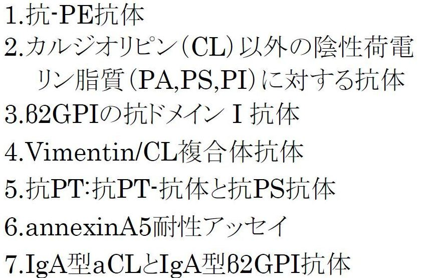
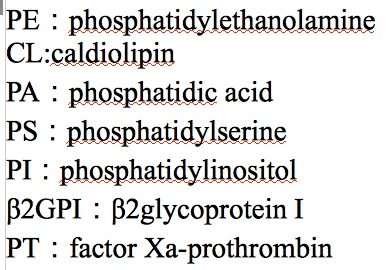

久しぶりの速報版です。
2013年4月以降HPVワクチン（いわゆる「子宮頸がん」予防ワクチン）が定期接種対象となり積極勧奨されたとたん、6月14日には積極勧奨が中止となりました。その、主な理由は、
ということでした。このほかにも、
も、懸念の対象となっています。
その後、厚労省は10月28日にも会合を持ち、積極的勧奨をしないという結論を継続、つまり最終判断を保留にしていますが、2013年12月には結論を出す、としています。これまでの症例や、原因不明の痛みの原因究明の成果が発表されて、積極勧奨が解除される可能性もありうるかもしれません。しかし、
当医薬ビジランスセンター(薬のチェック)では、この問題に重点的に取り組み、全国子宮頸がんワクチン被害者連絡会（被害者の会）が厚生労働省に提供した公表情報中の20症例を検討するとともに、接種直後からの異常に多い失神・意識消失・痙攣は、単に軽症の迷走神経反射では説明できないこと、自己免疫疾患についても、多発していることを様々な観点から証明を試みてきました。
それらの検討結果のまとめは、「薬のチェックは命のチェック」52号（2013年10月発行）で書きました。
さらに、医師・薬剤師等専門家向け情報として、TIP「正しい治療と薬の情報」誌に以下の３論文を書きました。
そこで、これまでの当センターの検討結果を、公開いたします。害反応とはどういうものなのか、それの何が問題なのかなど、問題点をそれぞれの立場で考え、大いに議論していただき、ワクチンの是非を判断していただくための、一助となると思います。
なお、当センターで検討した結果では、
原因不明とされているHPVワクチン接種後の疼痛の発症機序として、これまでに提唱されている仮説（特にアジュバント接種後の自己免疫/自己炎症症候群：ASIA）などとも矛盾しませんが、特にそのうちでも、体内を移動するように感じられる疼痛や、MRIやCTでも異常が認められない中枢神経症状の原因として、多発性微小血栓の形成と溶解の可能性があるのではないかと考え、さらにその原因として抗リン脂質抗体症候群がありうるのではないか、と考えるに至りました。
抗リン脂質抗体症候群という病名は、習慣性流産の原因にもなりうる、ということで、一般にもご存じのかたもいるかもしれません。しかし、それ以外の点では、医師、あるいは疼痛に関する専門家でも病名自体は知っていても、HPVワクチン接種後の原因不明の痛みと結びつけて考えることにはかなり抵抗もあるようです。また、病名自体についても、なじみが薄く、なかなか医師の賛同は得られにくいのが現状です。
しかしながら、論文（TIP誌28(5):79-89. 2013）の要旨に書きましたが、
最も典型的な痛みは、突発性で、体のあらゆる部位に時間を異にして一過性の疼痛が出現と消褪を繰り返し、移動するように感じられること。また、その痛みの症状は、緊張や運動、寒冷など血管が収縮するような場合には症状が悪化し、加温したり、血管を広げる薬剤（例えば交感神経の即効性拮抗剤であるフェントラミン、商品名レギチーン）を使用するなど、血管を拡張することによって症状が改善していました。
また、てんかんの様な痙攣発作や一過性の視力異常、計算能力の低下、ジストニアやアテトーゼ、パーキンソン病、舞踏病様などを思わせるような不随意運動など、かなりの神経症状があるのに、脳波の異常やMRI、CTでも異常を認めないことが多いようです。神経症状がずっと続く場合もあり、それが最も問題ですが。
こうした症状は、可逆的にしても、不可逆的なものにしても、多発性微小血栓によって、かなりの程度説明ができそうです。
一旦、血液が固まって血栓ができても、「線溶現象」という仕組みが働いて、普通はすぐに、血栓を溶かしますので、痛みなどの症状が出ても一時的であることが多いのです。ただし、間もなく、別の場所で血栓ができて血管を詰めるとまた痛みが起きますが、その血栓が溶けると症状はまたなくなります。こうして、あちこちの血管が詰まって痛んではまた溶け、別の場所が詰まってまた溶ける、を繰り返すと、まるで痛みが移動しているように感じられると考えます。
感染症やワクチン、アジュバントは、抗リン脂質抗体を上昇させ、抗リン脂質抗体症候群を発症させることが、ヒトでも動物実験でも知られています。HPVワクチンによる抗リン脂質抗体症候群は、報告が極めてまれですが、HPVワクチンは強力なアジュバントを含むため、抗リン脂質抗体の上昇、あるいは抗リン脂質抗体症候群を発症させている可能性が十分にありうると考えています。
したがって、HPVワクチン接種後に、痛みを繰り返したり、原因不明の神経症状が続いている人は、ぜひ受診のうえ、抗リン脂質抗体症候群の可能性について、検査をしていただくように、医師に依頼してみてください。多くの医師は拒むかもしれませんが、私たちの情報を印刷して示し、粘り強く申し出ていただきたいと思います。
臨床医に対するお願いは、HPVワクチン接種後に、痛みを繰り返したり、原因不明の神経症状を訴えている患者さんを診察した場合には、HPVワクチン接種後の患者の訴えを適切にとらえ、抗リン脂質抗体症候群を、鑑別診断すべき疾患の一つに加えていただきたいと思います。
そして、多発性微小血栓の可能性が想定しうる患者さんについては、通常の抗リン脂質抗体症候群の診断に必要な3つの抗リン脂質抗体（ループスアンチコアグラント (LA)、抗カルジオリピン抗体(aCL抗体)、それに、抗β2-GP-1抗体）を複数回測定するとともに、抗リン脂質抗体症候群の現在の診断基準では推奨されている以外の抗リン脂質抗体についても、できるだけ検査していただきたいと思います。
|  |  |
| 第１論文の表3と同じ（第1論文の文献11より改変引用） | |
|---|---|
TIP誌2013年10月号の第１論文（HPVワクチン接種後疼痛・神経症状：抗リン脂質抗体症候群では？）と第2論文（HPVワクチン接種後の自己免疫疾患罹患のリスク分析）の要旨を以下に記しておきます（詳しくは第１論文全文、第2論文全文をお読みください）。
HPVワクチンの積極勧奨中止の主な理由は「 原因不明の持続する痛み」である．
全国子宮頸がんワクチン被害者連絡会が厚生労働省に提供した公表情報中の20症例を検討し多様な神経症状，感覚や記憶の異常などを統一的に説明しうる機序について考察を加えた。
最も典型的な痛みは、突発性で体のあらゆる部位に時間を異にして一過性の疼痛が出現・消褪を繰り返し、移動する。また緊張や運動、寒冷など血管収縮により症状が悪化し、加温やフェントラミン使用など、血管拡張により症状が軽快していた。脳波異常やMRI、CTでも異常を認めないてんかん様の痙攣発作、一過性視力異常や計算能力の低下、ジストニア、アテトーゼ、パーキンソン病、舞踏病様を思わせる症状などは、可逆性でも不可逆性でも多発性血栓症で矛盾なく説明できる。
4例は自己免疫疾患(SLEやRAなど)と診断されたが、それら以外の16例全例で、多発性微小血栓症の可能性が高い(2例)、可能性あり(12例)、あるいは否定できない(2例)と考えられた。抗リン脂質抗体症候群(APS)は多発性血栓症を伴う自己免疫疾患で、経過のみから強く示唆される血清学陰性抗リン脂質抗体症候群(SNAPS)が提唱されていること、血栓形成が可逆的であるため画像診断についても必須とは言えないことなどを考慮すると、上記の16例は、臨床経過から抗リン脂質抗体症候群として矛盾なく説明が可能あるいは否定できない。
感染症やワクチン、アジュバントが抗リン脂質抗体を上昇させ、抗リン脂質抗体症候群を発症させることは、ヒトでも動物実験でも知られている。HPVワクチンによる抗リン脂質抗体症候群は報告がないが、HPVワクチンは強力なアジュバントを含むため、抗リン脂質抗体の上昇、あるいは抗リン脂質抗体症候群を発症させている可能性が十分にありうる。臨床医は、HPVワクチン接種後の患者の訴えを適切にとらえ、本疾患を念頭において診療する必要がある。
HPVワクチン接種後にワクチンやアジュバントが自己免疫疾患罹患に影響しないと仮定すれば、季節別の変動を除いては、接種後の時期別の変動はないはずである。HPVワクチンのランダム化比較試験につき、時期別に自己免疫疾患などの罹患率を比較したところ、ガーダシルもサーバリックスも、対照群(アルミニウムアジュバントもしくはアルミニウムアジュバント入りA型肝炎ワクチン)とともに、自己免疫疾患や慢性疾患などの罹患率、死亡率が、時期別に大きく変動していた。サーバリックスでは約3.5年以降は2~3年までよりさらに増加が著しかった。このことは、HPVワクチンおよびアジュバントが、自己免疫疾患や慢性疾患罹患率や死亡率を増加させうることを強く示唆する。強力なアジュバントを不可欠とするHPVワクチンは、各種自己免疫疾患を増加させている可能性が高く、接種後4年を超えてもなお継続して害の増加が懸念されるため、長期継続監視が必要である。
HPVワクチンによる失神の頻度は、他のワクチンと比較して100倍超と群を抜いて高頻度でかつ重篤である。痙攣の頻度は日本脳炎ワクチンと比較して6～10倍の高頻度である。失神・意識消失は接種から5分以内または直後のものが全体の43％を占めるが、10分以上経過後の発症も40%近くあり、注射直後の迷走神経反射による一過性失神やアナフィラキシー、多臓器不全における高サイトカイン血症など従来の一般的機序では説明しがたく、高頻度かつ重篤な失神・意識障害の発症として別の機序を考えた。接種直後の失神は、節状神経節に存在するTLR4をVLPおよびアジュバントが強く刺激して迷走神経反射を起こすことが最も可能性があると考えられた。また、やや時間を経過した失神・意識消失反応には、注射局所で、強力なアジュバント入りワクチンにより壊死した細胞から放出されたDNAがタンパクと結合して強力なアジュバント作用を発揮しうること、さらに時間単位で発症する意識消失には、S1Pの過剰産生が関係しうると考えられた。これまでのワクチンでは経験したことがないほどの高頻度かつ重篤なHPVワクチンの害について、医療関係者は関連なしとして見過ごしてはならないと考える。